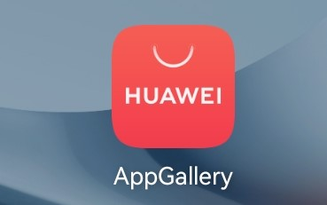
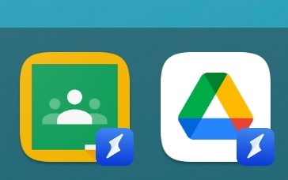

- ・Amazonアプリストアを使う
- ・外部からAPKファイルをダウンロードし、インストールする（自己責任）
- ・Quick Appを使用する
Huawei Matepad11は、日本における「HarmonyOS」を搭載した初のタブレット端末
画面のリフレッシュレートが120Hzに対応している
HuaweiとHiSilicon Technologyによって開発された独自OS
スマートフォンやタブレット端末だけでなくIoT機器にも搭載でき、デバイス間でスムーズな連携を取れるようになっている
| 価格 | ￥46,554(購入当時) |
|---|---|
| SoC | Qualcomm Snapdragon 865 |
| OS | HarmonyOS |
| メモリ(RAM) | 6GB |
| ストレージ(ROM) | 128GB |
| 画面サイズ | 10.95インチ |
| 解像度 | 2560×1600 |
MatePad11はGMSを搭載していないためGoogle Playストアを使用することができない。そのため代わりにAppGalleryというアプリがインストールされている。

しかしながらAppGalleryにあるアプリの種類は少なく、自分の使用したいアプリがAppGalleryにないこともある
そのときは外部からアプリケーションをインストールするなどの方法がある。
例として以下の方法を挙げる
ブラウザ経由でもGoogleのサービスは使用できるが、Quick Appを使用して下の画像のようにアプリケーションと同じ感覚で使うこともできる
MatePad11ではスタイラスペンであるHuawei M-Pencilを使うことができる
4096段階の筆圧に対応しており、Matepad11本体にマグネットでくっつける事ができる